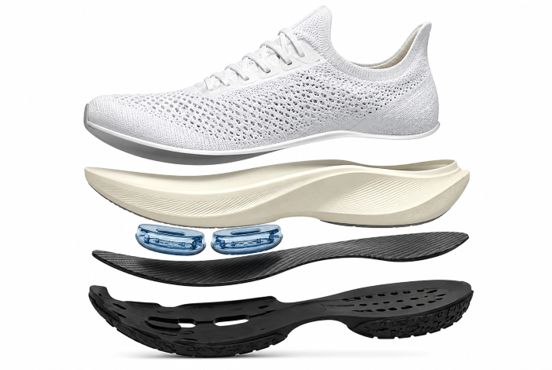

حان وقت 4 أسئلة متقدمة
ومفاجآت مثيرة أخرى...
(هذا يعني أننا تقدّمنا في المستوى)
مختبر القناني
تلقّى فريق التطوير في المختبر مهمة تصميم قنينة للشرب.
يجب أن تلبّي القنينة هذه المتطلبات الثلاثة:
الشفافية - يمكن رؤية كمية الماء من خلال القنينة.
قابلية الكسر - القنينة مقاومة للكسر.
الصلابة - القنينة مناسبة للاستخدام اليومي، فلا تتلف ولا تنثني.
جرّبوا المحاكاة وساعدوا فريق التطوير على تحديد المادة المناسبة لتصنيع هذه القنينة.
بعد التجربة، أي مادة تناسب صنع القنينة منها وفقًا للمتطلبات
(قابلية كسر منخفضة، شفافية عالية، وصلابة عالية)؟
مختبر القناني
الآن يطلب من فريق التطوير تطوير مجموعة زجاجات إضافية – لمكاتب الهايتك. في هذه الحالة يجب أن تلبي القنينة متطلبات أخرى:
- الشفافية – لا حاجة إلى رؤية كمية الماء من خلال القنينة.
- قابلية الكسر - القنينة مقاومة للكسر.
- الصلابة – لا توجد متطلبات خاصة. تخزّن القناني في خزانة وليست قيد الاستخدام اليومي.
جرّبوا المحاكاة وساعدوا فريق التطوير على تحديد المادة المناسبة لتصنيع هذه القنينة.
أ. أي مادة تناسب صنع قنينة المكتب وفقًا للمتطلبات
(قابلية كسر منخفضة، شفافية منخفضة، وصلابة دون متطلبات خاصة)؟
ب. أكملوا الادّعاء العلمي:
وفقًا لمتطلبات تطوير قنينة المكتب، الخاصية الوحيدة المهمة
للقنينة هي
على مستوى
.
لذلك، من بين المواد الثلاث، الأنسب لإنتاج قنينة المكتب هو: .
فريق تطوير يخطط لعلبة طعام قابلة لإعادة الاستخدام للطلاب. يجب أن تكون العلبة خفيفة، لا تنكسر بسهولة، ومقاومة للماء.
أمامكم جدول معطيات عن ثلاث مواد محتملة لصنع العلبة.
أي مادة تناسب وفقًا للمعطيات في الجدول؟
| مادة | قابلية الكسر | مقاومة الماء | ليونة | شفافية |
|---|---|---|---|---|
| زجاج | عالية | عالية | منخفضة | عالية |
| بلاستيك صلب | منخفضة | عالية | متوسطة | متوسطة |
| كرتون مطلي | متوسطة | متوسطة | منخفضة | منخفضة |
في المختبر فحصت ثلاث عينات من مواد غير معروفة.
في كل عينة لوحظت خصائص مختلفة للمادة.
طابقوا بين العينة والمادة أو الجسم المناسب لها:
العينة أ: يمكن الرؤية من خلالها بوضوح، لا تنجذب إلى المغناطيس، لا تذوب في الماء، غير موصلة للكهرباء
العينة ب: لا يمكن الرؤية من خلالها، تنجذب إلى المغناطيس، لا تذوب في الماء، موصلة للكهرباء
العينة ج: لا يمكن الرؤية من خلالها، لا تنجذب إلى المغناطيس، تذوب في الماء، غير موصلة للكهرباء
هل تعلم؟
حذاء الجري الذي يبدو وكأنه "يعيد" لك الطاقة
تخيلوا أنكم تركضون، وفي كل مرة تضرب فيها القدم الأرض لا يمتص الحذاء الصدمة فحسب، بل يساعدكم أيضًا على الاندفاع للخطوة التالية. هذه بالضبط هي التجربة التي تحاول أحذية الجري التنافسية في الصورة توفيرها.
اضغطوا للتعرف على المواد التي صنع منها الحذاء وخصائصها.

تلميح
قارنوا جميع خصائص العينة بخصائص المواد، واختاروا المادة التي تتطابق مع جميعها.
تلميح
تحققوا من الخصائص المرتبطة مباشرة بمتطلبات المنتج: مقاومة الماء وقابلية كسر منخفضة.